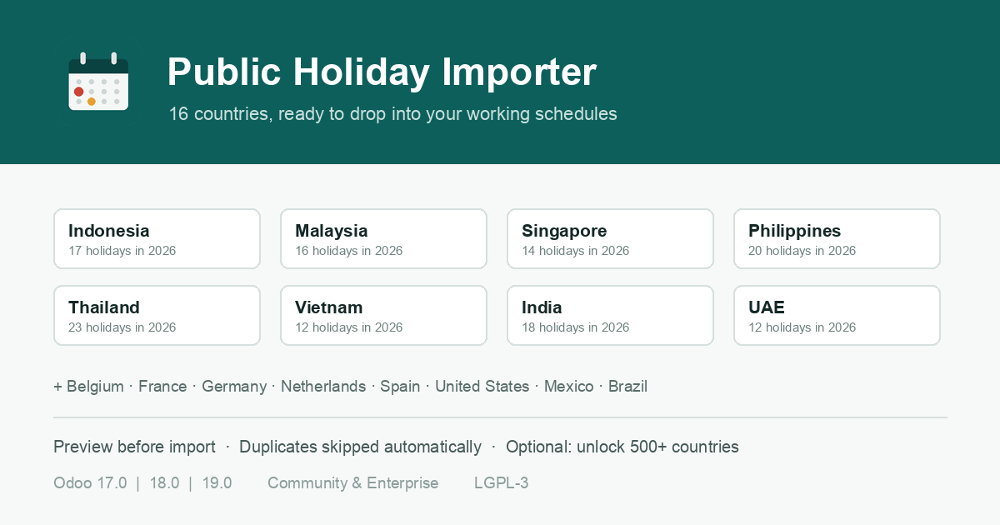

16 countries, ready to drop into your working schedules
Odoo already excludes public holidays from working time — but it never fills them in for you. Somebody has to type every date, every year, for every working schedule. This module ships the dates and copies the ones you pick into your schedules in one step.

1 · ChoosePick a country, a year range, and which working schedules should receive the holidays. |
2 · PreviewSee how many dates were found and a sample of them, before anything is written to your database. |
3 · ImportGet a summary of what was created and what was already there. Running it twice never duplicates anything. |
Years 2025 to 2030 included. No extra software needed.
| Asia-Pacific | Indonesia, Malaysia, Singapore, Philippines, Thailand, Vietnam, India |
| Europe | Belgium, France, Germany, Netherlands, Spain |
| Americas | United States, Mexico, Brazil |
| Middle East | United Arab Emirates |
| Any other country |
Optional: install the open-source holidays Python package on
your server to unlock 500+ countries and any year range.
The module works fully without it.
|
| No data leaves your server | This module makes no network calls. Dates are stored in the module or computed locally by the optional Python package. |
| Standard Odoo records | Imported holidays are ordinary public holidays under Time Off → Configuration. Time Off duration already excludes them. |
| Indonesia | Official national holidays only. Cuti bersama is decreed each year and cannot be generated in advance — add those dates to the reference list yourself, then import as usual. |
| Compatibility | Odoo 17.0, 18.0 and 19.0 — Community and Enterprise |
| Licence | LGPL-3 |
A bug, a question, or a country you would like bundled? Write to ferhatmuhamad221@gmail.com
Full installation and troubleshooting guide is included in the module's README.